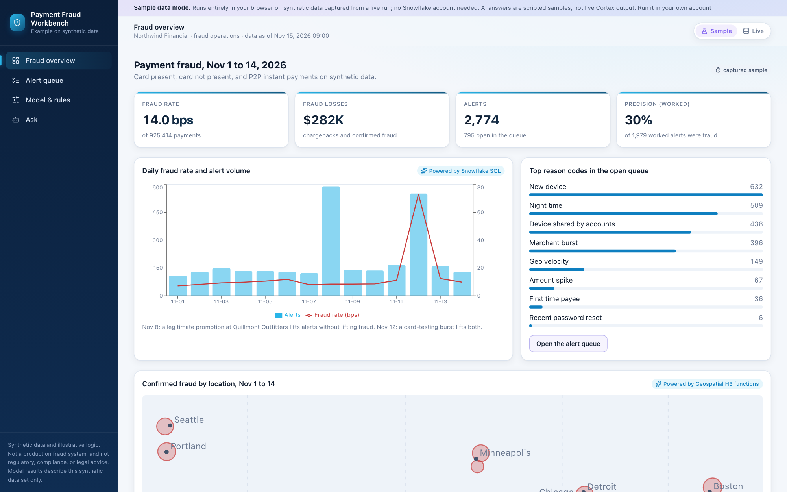
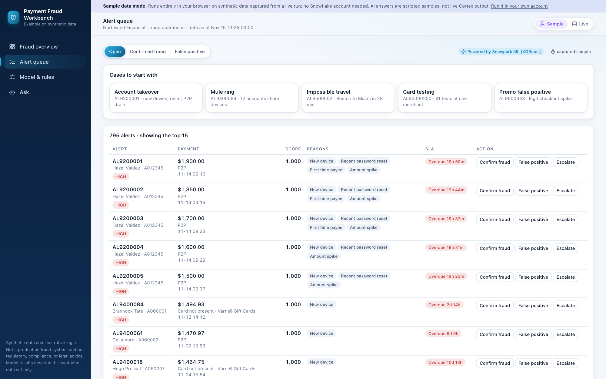
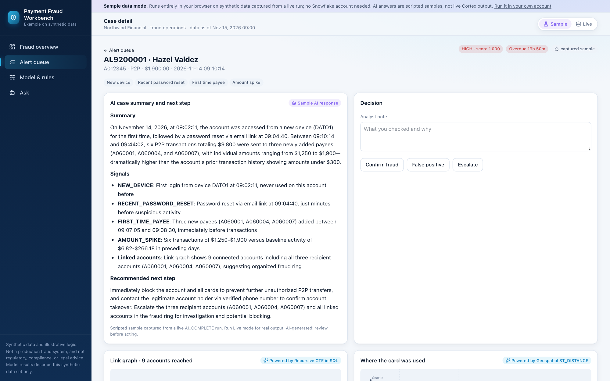
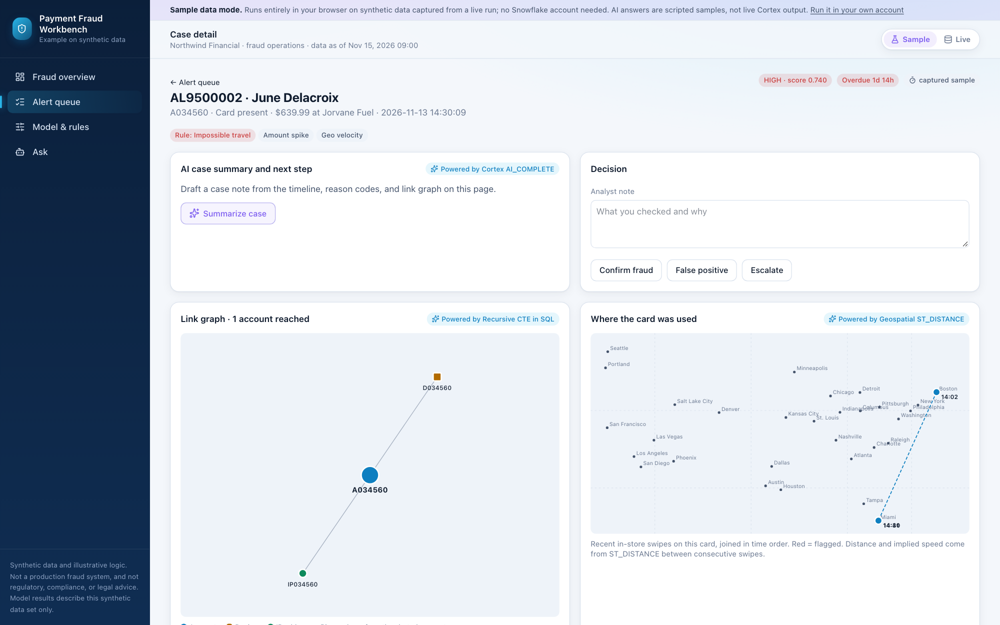
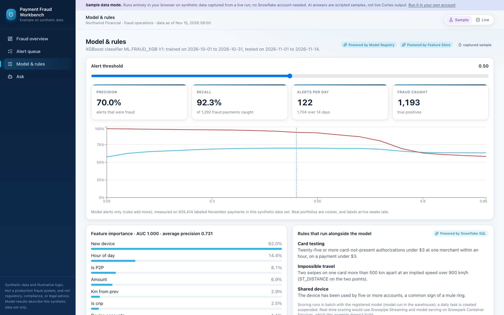
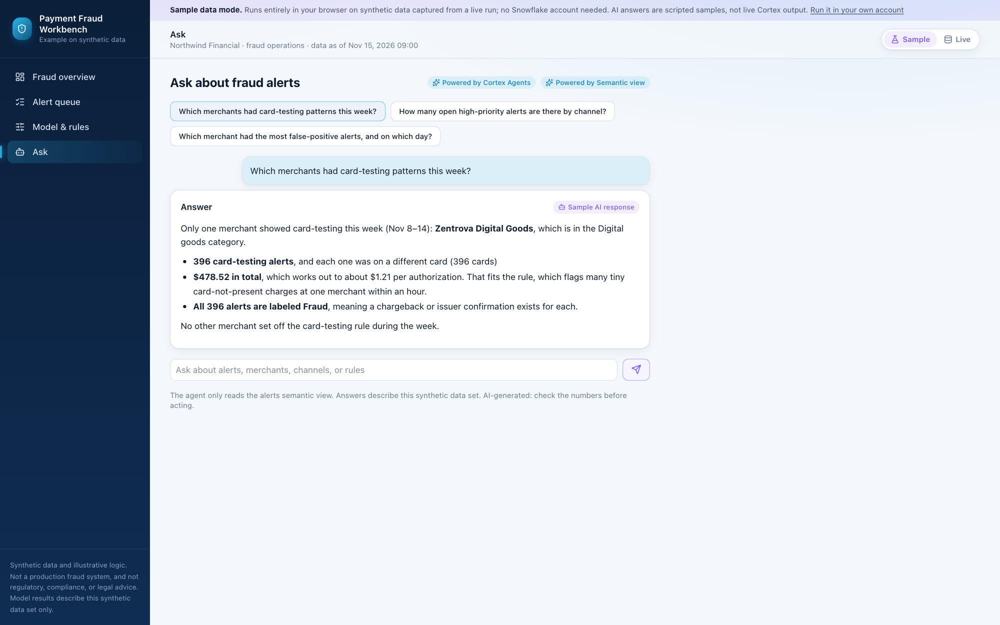

Catch payment fraud faster, from first alert to closed case
A fraud analyst at a bank starts the day with hundreds of alerts across card and instant payments. This example puts the score, the reasons, the linked accounts and devices, and an AI-drafted case note on one screen, so the analyst can confirm fraud, clear a false positive, or escalate with the evidence in front of them. Model training, feature engineering, link analysis, and AI all run in Snowflake on the same data.
Synthetic data, illustrative logic. Not a production fraud system, and not regulatory, compliance, or legal advice. Every name, account, and payment is invented. Model results describe this synthetic data set only.
What analysts can do
Five screens cover the daily workflow. The synthetic data has five planted stories so the walkthrough has something to find.
See where fraud is
Fraud rate in basis points, losses, alert volume, and precision on worked alerts, with a map of fraud by H3 cell.
Work the queue
Alerts ranked by priority with model score, reason codes, rule hits, and an SLA timer. Confirm, clear, or escalate in one click.
Investigate a case
A timeline of payments and logins, a map of the card’s swipes, and a link graph of the accounts, devices, and IPs around it.
Close with an AI case note
AI_COMPLETE drafts a summary, the signals, and a next step from the case facts, for the analyst to review.
Tune the threshold
See how precision, recall, and alert volume move as the model threshold changes, on labeled data.
Ask in plain language
“Which merchants had card-testing patterns this week?” answered by a Cortex Agent over a semantic view of alerts.
Walkthrough
Screenshots of the running app in Sample mode. Every number comes from the synthetic data set, and the AI text was captured from a live run.






How it works in Snowflake
| Step | Snowflake capability | What it does here |
|---|---|---|
| Features | Feature Store on Dynamic Tables | 14 velocity features per payment: card and account velocity, amount versus the 30-day average, new and shared devices, merchant small-authorization bursts, first-time payees, recent password resets, and distance and speed since the last swipe |
| Model | Snowpark ML and the Model Registry | XGBoost trained in a Snowpark Python procedure on October labels, tested on November, registered as FRAUD_XGB, and run in batch with model.run. A daily task (created suspended) re-scores. |
| Geospatial | ST_DISTANCE, H3 functions | Impossible travel between consecutive swipes, and the fraud map by H3 cell |
| Link analysis | Recursive CTEs | Walks account to device or IP to account to find linked accounts and mule rings |
| Case note | AI_COMPLETE | Drafts a summary, the signals, and a next step from the case facts |
| Ask | Cortex Agents, semantic views | Answers questions with SQL that Cortex Analyst generates over ALERTS_SV |
Scoring is batch in this example. Real-time authorization scoring would use Snowpipe Streaming and model serving on Snowpark Container Services, which this example doesn’t build.
Run it
Sample mode, no account
git clone https://github.com/sfc-gh-ooral/sfguide-payment-fraud-workbench.git
cd sfguide-payment-fraud-workbench
npm install
npm run devOr open the hosted example. AI answers are labeled Sample AI response.
Live mode, your account
- Run
sql/setup.sqlin a Snowsight worksheet as ACCOUNTADMIN. It creates its own database, an XSMALL warehouse, and a least-privilege role. - Set up key-pair auth and copy
.env.exampleto.env.local. npm run devand switch the header to Live.- When you’re done, run
sql/cleanup.sql.
The README lists every object created, measured cost and time, known limitations, and Cortex Code prompts to adapt it to your own authorization feed and chargeback labels.